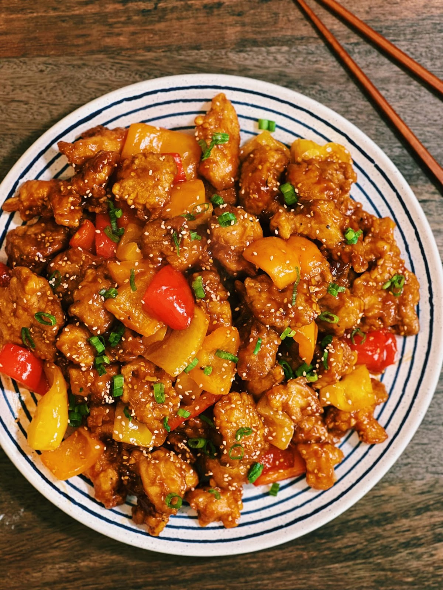

Sweet and Sour Chicken

Everyone’s favorite Sweet and Sour Chicken!
Juicy tender chicken coated in a tangy and savory sauce, Sweet and Sour Chicken hit the spot every single time. Sweet and Sour Chicken pairs well with everything; you can serve it with my Classic Egg Fried Rice, Taiwanese Chow Mein, or my better than takeout 20 minutes Chow Mein noodles.
Ingredients
- 6 pieces of boneless chicken thigh (cut into bite-sized pieces)
- ⅓ cup of Rice Flour
- ¼ cup of Corn Starch
- 2 tbsp of Soy Sauce
- 1 tbsp of Minced Garlic
- Salt and Pepper to season
- ⅓ cup of Soda Water
- 1 Egg
- 3 Pepper of your choice
- 2 tbsp of minced garlic
Sweet and Sour Sauce
- 3 Tbsp of Ketchup
- 2.5 Tbsp of Rice Vinegar
- 1.5 Tbsp of Plum Sauce
- 2 tbsp of Soy sauce
- 2 tbsp of Oyster Sauce
- 1 Tbsp Sugar (optional)
Steps
- Marinate the chicken with soy sauce, minced garlic, salt, pepper, corn starch, rice flour, soda water, and egg.
- Massage everything together; you want a thick but slightly runny consistency; add more rice flour or soda water if needed. Rest for 20 minutes.
- Mix soy sauce, oyster sauce, ketchup, rice vinegar, plum sauce, and sugar.
- Add in oil (enough to cover the chicken) in a pan, and turn the heat to medium-high. Once the oil is hot, add in the chicken and deep fry for 6-7 minutes or until golden brown.
- Optional: remove the chicken, set it aside. Turn the heat up to high, add back in the chicken, and deep fry for 1-2 minutes.
- In a separate pan, add in oil and turn the heat to medium-high—next, add in minced garlic and chopped bell pepper of your choice. Saute together for 1-2 minutes.
- Drizzle in the sauce and let it simmer for 1-2 minutes or until it becomes a thicker consistency.
- Add in crispy chicken and saute on high heat for 1 minute.